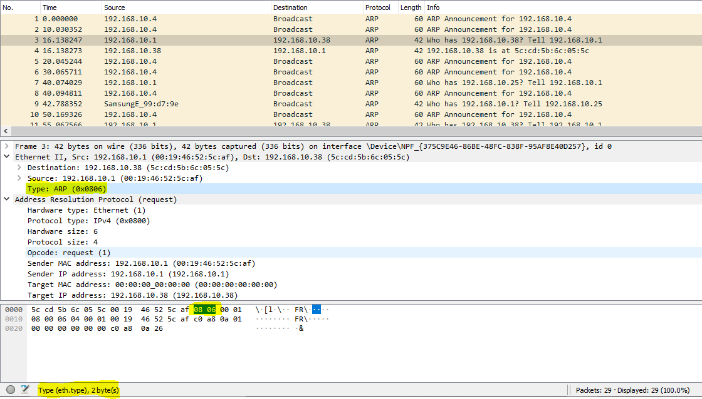

Opcode: request(1) é utilizado para solicitação.
Opcode: reply(2) é utilizado para resposta.
O tamanho do cabeçalho para uma solicitação é o mesmo para a resposta, estes quetem 28 Bytes (224 bits).
Quando o endereço MAC de destino é desconhecido (Provavelmente estamos falandode um request) apenas é enviado o pacote com o endereço IP de destino e o endereço MAC (destino) é dado por 00:00:00:00:00:00.
É indicado por "Type: ARP (0x0806)".

A resposta ARP (reply) não é transmitida por Broadcast uma vez que o endereço dedestino é quem começou a comunicação, logo o pacote contêm o endereço de IP e MAC de ambos, diferente do request que não continha o endereço MAC de destino e por isso necessita do Broadcast.